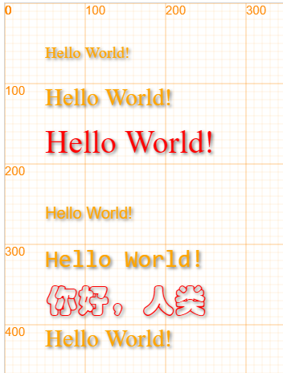
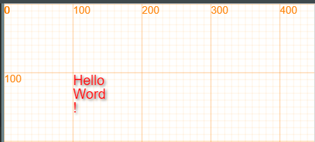
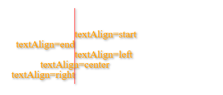
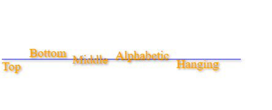
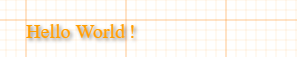
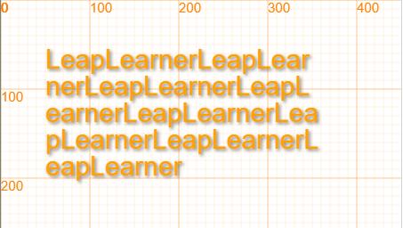

文字¶
文本显示 text¶
写字 text¶
text(src, x, y, *size, *color, *font) : 绘制文本，同样，我们需要x、y来绘制文字的位置
/***************************************************************
* text(string, x, y, *size, *color)
*
* 在画布上写字：
*
* 文字内容：string
* 文字左上角顶点位置为（x,y）
* 文字大小为size，可选参数，默认为20
* 文字颜色为为color，可选参数，默认为 "orange"
***************************************************************/
我们来继续看一些写字例子：
canvas.showAxis();
text("Hello World!", 50, 50);
text("Hello World!", 50, 100, 30);
text("Hello World!", 50, 150, 40, 'red');
// 使用不同的字体
text("Hello World!", 50, 250, 20, null, "Arial");
text("Hello World!", 50, 300, 30, undefined, font="Consolas");
text("你好，人类", 50, 350, 40, 'red', 'STCaiyun');
text("Hello World!", 50, 400, 30);
在这里，我们也能看到不同的字体表现出来的效果差异很大。

字体 font¶
/***************************************************************
font(fontName)
设置字体
* 字体名称：fontName
/***************************************************************/
能够使用的字体是和系统相关的，在不同系统下常见字体如下：
Windows
- 黑体：SimHei
- 宋体：SimSun
- 新宋体：NSimSun
- 仿宋：FangSong
- 楷体：KaiTi
- 仿宋GB2312：FangSongGB2312
- 楷体GB2312：KaiTiGB2312
- 微软雅黑：Microsoft YaHei
Mac Os
- 冬青黑体: Hiragino Sans GB （SNOW LEOPARD开始提供）
- 华文细黑：STHeiti Light （又名STXihei）
- 华文黑体：STHeiti
- 华文楷体：STKaiti
- 华文宋体：STSong
- 华文仿宋：STFangsong
如果安装了Microsoft Office软件，那么还可以使用以下字体
- 隶书：LiSu
- 幼圆：YouYuan
- 华文细黑：STXihei
- 华文楷体：STKaiti
- 华文宋体：STSong
- 华文中宋：STZhongsong
- 华文仿宋：STFangsong
- 方正舒体：FZShuTi
- 方正姚体：FZYaoti
- 华文彩云：STCaiyun
- 华文琥珀：STHupo
- 华文隶书：STLiti
- 华文行楷：STXingkai
- 华文新魏：STXinwei
等宽字体：
- Consolas
多行文字 Multi-lines¶
可以通过重新定义text方法，让text支持\n作为分隔符，实现分行效果。
var oldtext = text;
var text = function (src, x, y, size, color){
src.split("\n").forEach(function(s){
oldtext(s, x, y, size, color);
y += size;
});
};
text("Hello\nWord\n!", 100, 100, 20, "red");

注意，这里text方法只能用变量的方式进行重新定义。
文字对齐 Align¶
左右对齐¶
定义和用法 ctx.textAlign 属性根据锚点，设置或返回文本内容的当前对齐方式。
通常，文本会从指定位置开始，不过，如果您设置为 textAlign="right" 并将文本放置到位置 150，那么会在位置 150 结束。
提示：使用 text() 或 text.draw() 方法在实际地在画布上绘制并定位文本。
默认值： start JavaScript 语法：ctx.textAlign="center|end|left|right|start";
属性值 值 描述 start 默认。文本在指定的位置开始。 end 文本在指定的位置结束。 center 文本的中心被放置在指定的位置。 left 文本左对齐。 right 文本右对齐。
line(150, 20, 150, 170, 1, "red");
// 显示不同的 textAlign 值
ctx.textAlign="start";
text("textAlign=start", 150, 60);
ctx.textAlign="end";
text("textAlign=end", 150, 80);
ctx.textAlign="left";
text("textAlign=left", 150, 100);
ctx.textAlign="center";
text("textAlign=center", 150, 120);
ctx.textAlign="right";
text("textAlign=right", 150, 140);

上下对齐¶
定义和用法 textBaseline 属性设置或返回在绘制文本时的当前文本基线。
下面的图示演示了 textBaseline 属性支持的各种基线：
文本基线图示 注释：text() 或 text.draw() 方法在画布上定位文本时，将使用指定的 textBaseline 值。
默认值： top ctx.textBaseline="alphabetic|top|hanging|middle|ideographic|bottom";
属性值 值 描述 alphabetic 文本基线是普通的字母基线。 top 文本基线是 em 方框的顶端。。 hanging 文本基线是悬挂基线。 middle 文本基线是 em 方框的正中。 ideographic 文本基线是表意基线。 bottom 文本基线是 em 方框的底端。
line(5, 100, 395, 100, 1, "blue");
ctx.textBaseline="top";
text("Top",5,100);
ctx.textBaseline="bottom";
text("Bottom",50,100);
ctx.textBaseline="middle";
text("Middle",120,100);
ctx.textBaseline="alphabetic";
text("Alphabetic",190,100);
ctx.textBaseline="hanging";
text("Hanging",290,100);

文字长度测量¶
定义和用法 measureText() 方法返回包含一个对象，该对象包含以像素计的指定字体宽度。
提示：如果您需要在文本向画布输出之前，就了解文本的宽度，那么请使用该方法。
ctx.measureText(text).width;
参数值 参数 描述 text 要测量的文本。
canvas.showAxis();
let msg = "Hello World";
text(msg, 100, 100, 20);
ctx.font = "20px Arial";
let len = ctx.measureText(msg).width;
text("!", 100+len, 100);

文本对象 Text¶
class Text extends Rectangle
constructor (src = 'LeapLearner', x = 0, y = 0, size = 20, color="orange", font = 'Arial')
自动换行 Auto line break¶
// Let us code the future
var title = new Text("LeapLearnerLeapLearnerLeapLearnerLeapLearnerLeapLearnerLeapLearnerLeapLearnerLeapLearner", 50, 50, 30);
Text.prototype.print = function(width=canvas.width){
let text = this.clone();
let src = this.src;
text.src = " ";
width = width - text.width;
if(width < 0){
width = 0;
}
while(src){
text.src = "";
for(var i=0; i<src.length; i++){
text.src += src[i];
if(text.width < width && i<src.length-1){
continue;
}
text.draw();
text.y += this.h;
break;
}
src = src.slice(i+1);
}
};
canvas.showAxis();
title.print(300);
